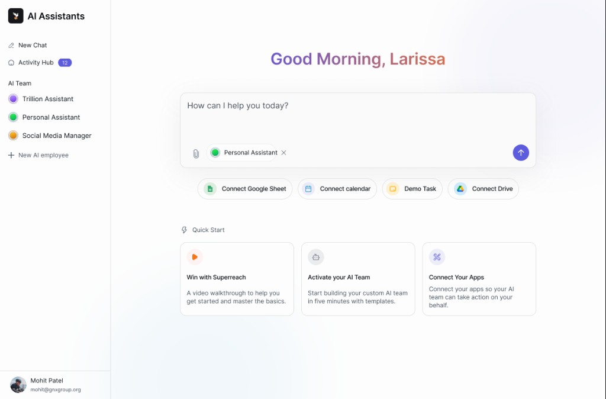
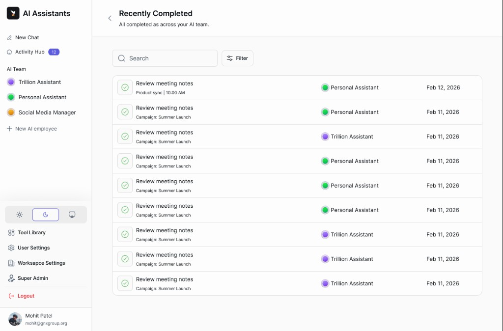

Case Study
SaaS Design System (AI + Automation Ready)
A scalable component library to build SaaS products faster & consistent
Overview
Many SaaS products suffer from inconsistent UI patterns, repeated work, and slow design execution. I built a reusable design system that helps designers and developers create dashboards, forms, tables, and workflows quickly with consistency.
The Problem
- Inconsistent UI across product modules
- Repeated design effort for same components
- Slow handoff and unclear dev implementation
- No defined typography, spacing, or component standards
Goals
- Create reusable components for SaaS dashboards
- Define typography, spacing, color tokens & accessibility
- Improve speed of building new product screens
- Provide developer-ready documentation
My Role
- UX Planning + Component Strategy
- UI System Design + Visual Consistency
- Interactive Prototyping
- Documentation for Handoff
Process
1) SaaS UI Audit → 2) Foundations → 3) Components → 4) Patterns. Each phase was documented so the file stays the single source of truth for product and engineering.
Foundations (Tokens)
Typography scale, spacing system, color palette, and layout grid were defined as tokens so new screens stay aligned without one-off values.
Component Library
States: default, hover, active, disabled, error, and success are specified for each component in the Figma file.
Design Patterns (Most Important)
- Sidebar + top navigation
- Filter, search, and sorting
- Empty state and loading
- Billing and subscription
- Role-based access
- Form validation and error handling
Examples in the Application
Representative UI from the product: main chat workspace and activity / task history. The same design system components (navigation, inputs, lists, cards) are reused across these flows. See the Figma file for full specs and additional screens.


Case Study Inside the System
Example: "User Onboarding Flow using Design System"
Flow: Signup → Set up workspace → Choose plan → Invite team → Done. The flow reuses the same form patterns, empty states, and success feedback defined in the library.
Impact / Outcome
- Reduced screen design time by ~50% using reusable components
- Improved UI consistency across multiple product modules
- Created dev-ready components with naming and documentation
Deliverables
Learnings
- Scalable design thinking
- Token-based system building
- Accessibility and consistency
- Better product workflow & developer handoff